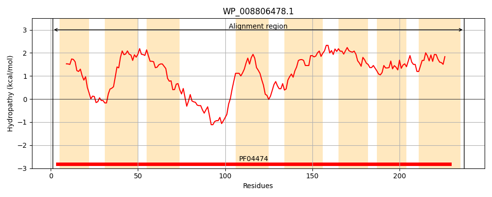
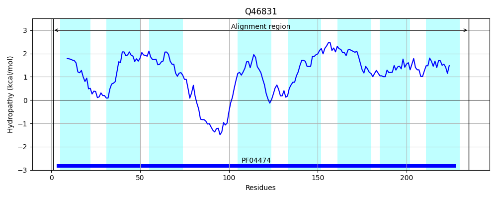
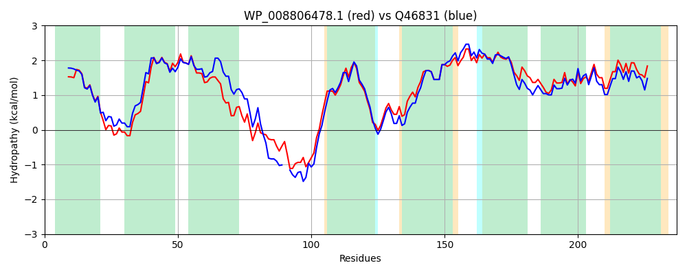

Hit Accession: Q46831
Hit TCID: 9.B.120.1.1
Hit Description: gnl|BL_ORD_ID|13687 gnl|TC-DB|Q46831|9.B.120.1.1 Uncharacterized protein yqgA OS=Escherichia coli (strain K12) GN=yqgA PE=4 SV=1
Mach Len: 237
e:0.000000
Query TMS Count : 8
Hit TMS Count: 8
TMS-Overlap Score: 7.400000
Predicted Substrates:None
BLAST Alignment:
Score: 939 , Bit scores: 366 bits, E-value: 4.7e-130, Alignment length: 237, Percentage identity: 78
Query: 1 MVTGPFINASAVLVGGVLGALLSQRLPERIRTSMTSIFGLASLGIGILLVIKCANLPVMVLSTLVGTLLGEICNMEKGINTLVSKLQQLMSAKGKKKASAHESYIQSYVAIIVLFCASGTGVFGAMREGMTGDASILIAKAFLDFFTATIFACTLGIAVAAISVPMLLIQLTLAACAAIIMPLTTPMMLADFSAVGGMLLVATGLRICGIKMFAVVNMLPALVLAMPISAAWTLFFA 237
MV GPFINASAVL+GGVLGALLSQRLPERIR SMTSIFGLASLGIGILLV+KCANLP MVL+TL+G L+GEIC +EKG+NT V+K Q L + +K AHES+IQ+YVAIIVLFCASGTG+FGAM EGMTGD SILIAK+FLDFFTA IFAC+LGIAV+ IS+P+L+IQLTLA AA+I+PLTTP M+ADFSAVGG+LL+ATGLRICGIKMF VVNMLPAL+LAMP+SAAWT +FA
Sbjct: 1 MVIGPFINASAVLLGGVLGALLSQRLPERIRVSMTSIFGLASLGIGILLVVKCANLPAMVLATLLGALIGEICLLEKGVNTAVAKAQNLF--RHSRKKPAHESFIQNYVAIIVLFCASGTGIFGAMNEGMTGDPSILIAKSFLDFFTAMIFACSLGIAVSVISIPLLIIQLTLAWAAALILPLTTPSMMADFSAVGGLLLLATGLRICGIKMFPVVNMLPALLLAMPLSAAWTAWFA 235 | Protein Hydropathy Plots: |
|---|
|  |  |
Pairwise Alignment-Hydropathy Plot:
|
|---|
|  |